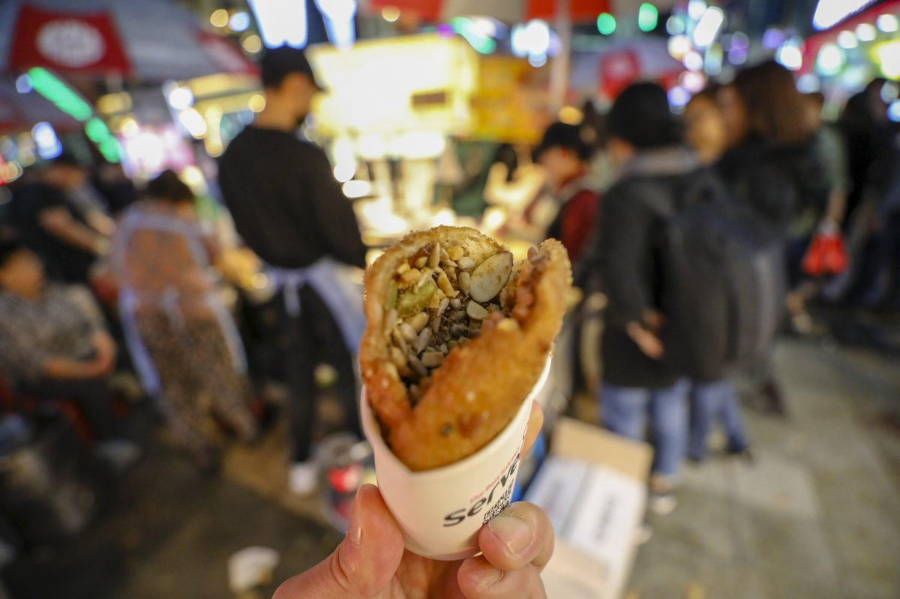

FIELD ITINERARY
5天4夜 每日詳細實景路引與時刻動線
每一站皆嚴格配備實體路牌、韓文門牌、最近地鐵出口與轉彎地標，絕不走冤枉路。
老城海味風華・國際市場棉被採購 ✕ 札嘎其帝王蟹饗宴
南浦洞 ➔ 國際市場棉被街 ➔ BIFF廣場 ➔ 札嘎其水產市場 ➔ 樂天港景露台

南浦蔘雞湯 (남포삼계탕)・一甲子人蔘精燉土雞

國際市場棉被街 (이불골목)・莫代爾四季被親選與大型壓縮裝箱

BIFF 廣場星光手印 ＆ 樂天百貨光復店頂樓 Sky Park
現煎外酥內 Q 的糯米麵糰剪開後，塞入滿滿葵花子、南瓜子、花生碎與肉桂黑糖粉，香脆可口。吃完散步至樂天百貨光復店 13 樓頂樓空中花園，免費 360 度俯瞰影島大橋與釜山港落日。

札嘎其市場大樓 1F 100號攤位・現蒸肥美帝王蟹與蟹膏炒飯
甘川韓服漫步・影島絕壁海岸 ✕ 西面頂級烤肉
甘川洞文化村韓服 ➔ 新昌豬肉湯飯 ➔ 影島白淺灘海蝕洞 ➔ 松島水晶纜車 ➔ 味贊王烤肉

甘川洞文化村 (감천문화마을)・哲秀與英熙韓服體驗與小王子合影
包含全套燙金韓服、蕾絲裙撐、專人髮髻編髮、復古手包。穿著韓服穿梭於粉紅粉藍交疊的陡峭山城巷弄，坐在小王子身旁留下背影經典大片。
新昌土鍋湯 (신창국밥 토성점)・琥珀色濃縮精燉清高湯

影島白淺灘文化村 (흰여울문화마을) ＆ 白淺灘海岸隧道
順著沿海步道散步，可在面海第一排的「Aether」或「Having Moment」咖啡館點一杯冰拿鐵，靠窗眺望遠方南港大橋上的船隻點點。

松島海上纜車 (송도해상케이블카)・橫越 1.62km 蔚藍大海
建議選購透明玻璃底部的「水晶車廂 (Crystal Cabin)」，腳下浪花翻騰。抵達對岸岩南公園後，可順遊銜接無人島的「松島龍宮天空步道」。

味贊王鹽烤肉 西面店 (맛찬들왕소금구이)・紅外線測溫究極豬五花
東釜山極速狂飆・海東龍宮 ✕ 廣安大橋落日夜色
Skyline Luge 滑車 ➔ 龍宮海鮮炸醬麵 ➔ 海東龍宮寺 ➔ 樂天Outlet ➔ 廣安里夜景生魚片

Skyline Luge 釜山斜坡滑車 (스카이라인 루지 부산)・4 條賽道風馳電掣
挑選合適尺碼安全帽 ➔ 搭乘 Skyride 高空吊椅一覽東釜山海景與童話城堡 ➔ 頂峰接受 1 分鐘操縱剎車教學 ➔ 沿著 Wind、Peak、Marine 等 4 條賽道極速俯衝！（建議購買 3 次或 4 次券，或持 Visit Busan Pass 兌換）。
海東龍宮海鮮炸醬麵 (용궁해물쟁반짜장)・滿滿章魚魷魚大鐵盤

海東龍宮寺 (해동용궁사)・日出岩、十二生肖石雕與觀音金佛
韓國罕見座落於海邊崖壁的佛門聖地，海風徐徐、浪濤拍擊黑石礁岩，登上高處海水觀音大佛俯瞰廣闊東海，景色大氣磅礡。

廣安里海水浴場 (광안리해수욕장)・民樂水產大樓現切活魚 ✕ 廣安大橋夜景
海岸鐵道浪漫・海雲台膠囊列車 ✕ 五星汗蒸幕
藍線天空膠囊列車 ➔ 青沙浦灌籃高手平交道 ➔ 秀敏家烤扇貝 ➔ 新世界 Spa Land 汗蒸幕 ➔ 海雲台夜市

海雲台藍線公園 (Haeundae Blueline Park)・天空膠囊列車 尾浦 ➔ 青沙浦
專屬 2~4 人獨立包廂，以時速 5 公里悠然前行於舊東海南部線廢棄鐵道高架上，右側是廣袤無垠的青藍東海與海浪拍岸，約 30 分鐘舒適抵達青沙浦站。

青沙浦海景平交道 ＆ 秀敏家烤貝 (수민이네)・炭烤鮮活大文蛤

新世界百貨 Spa Land (스파랜드)・地下 1000m 天然碳酸溫泉與 18 種主題熱療室
持 Visit Busan Pass 免費入場 4 小時！館內引進兩種純天然溫泉水，擁有羅馬三溫暖、土耳其浴、黃土房、冰雪房，並設有日式戶外足湯花園。換上寬鬆汗蒸服、綁上韓劇同款「羊角毛巾」，喝一杯香甜米釀（식혜）配溫泉蛋，極致療癒！

海雲台傳統市場 (해운대 전통시장)・尚國家辣炒年糕 ＆ 炭烤辣醬盲鰻
靈魂湯飯傳承・文青小巷巡禮 ✕ 伴手禮滿載歸國
西面松亭三代湯飯 ➔ 田浦咖啡街 ➔ 西面地下商街掃貨 ➔ 順暢抵達機場或高鐵
松亭三代豬肉湯飯 (송정3대국밥)・1946 年創立釜山第一味
田浦咖啡街 (전포카페거리) ＆ 西面地下街美妝採購 ➔ 機場返台
在 FM Coffee 來杯招牌冷萃或抹茶甜點，隨後至西面地下商街掃齊 Olive Young 韓系美妝保養品、海苔與伴手禮。回飯店取回抽真空的扁平棉被行李箱，搭地鐵無縫直達金海國際機場，完成 5 天 4 夜精采旅程！